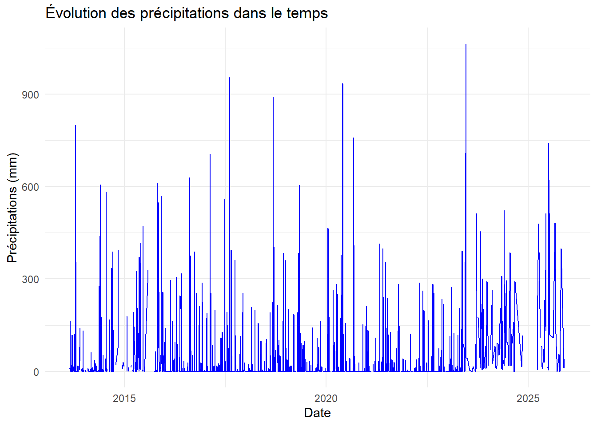

| STATION | DATE | LATITUDE | LONGITUDE | ELEVATION | NAME | PRCP | PRCP_ATTRIBUTES | SNOW | SNOW_ATTRIBUTES | DAPR | DAPR_ATTRIBUTES | MDPR | MDPR_ATTRIBUTES |
|---|---|---|---|---|---|---|---|---|---|---|---|---|---|
| US1TXGS0046 | 2013-08-25 | 30.22662 | -99.01644 | 537.1 | FREDERICKSBURG 9.1 WSW, TX US | 10 | ,,N | NA | NA | NA | NA | NA | NA |
| US1TXGS0046 | 2013-08-26 | 30.22662 | -99.01644 | 537.1 | FREDERICKSBURG 9.1 WSW, TX US | 0 | ,,N | 0 | ,,N | NA | NA | NA | NA |
| US1TXGS0046 | 2013-08-27 | 30.22662 | -99.01644 | 537.1 | FREDERICKSBURG 9.1 WSW, TX US | 163 | ,,N | NA | NA | NA | NA | NA | NA |
| US1TXGS0046 | 2013-08-29 | 30.22662 | -99.01644 | 537.1 | FREDERICKSBURG 9.1 WSW, TX US | NA | NA | NA | NA | 2 | ,,N | 0 | ,,N |
| US1TXGS0046 | 2013-08-30 | 30.22662 | -99.01644 | 537.1 | FREDERICKSBURG 9.1 WSW, TX US | 0 | ,,N | 0 | ,,N | NA | NA | NA | NA |
| US1TXGS0046 | 2013-08-31 | 30.22662 | -99.01644 | 537.1 | FREDERICKSBURG 9.1 WSW, TX US | 0 | ,,N | 0 | ,,N | NA | NA | NA | NA |
| US1TXGS0046 | 2013-09-01 | 30.22662 | -99.01644 | 537.1 | FREDERICKSBURG 9.1 WSW, TX US | 0 | ,,N | 0 | ,,N | NA | NA | NA | NA |
| US1TXGS0046 | 2013-09-02 | 30.22662 | -99.01644 | 537.1 | FREDERICKSBURG 9.1 WSW, TX US | 0 | ,,N | 0 | ,,N | NA | NA | NA | NA |
| US1TXGS0046 | 2013-09-03 | 30.22662 | -99.01644 | 537.1 | FREDERICKSBURG 9.1 WSW, TX US | 10 | ,,N | NA | NA | NA | NA | NA | NA |
| US1TXGS0046 | 2013-09-04 | 30.22662 | -99.01644 | 537.1 | FREDERICKSBURG 9.1 WSW, TX US | 0 | ,,N | 0 | ,,N | NA | NA | NA | NA |
Analyse des données météo US1TXGS0046
Introduction
Ce projet analyse les données météo provenant de la station US1TXGS0046 située au Texas, USA.
Les données incluent des mesures comme température, humidité, vitesse du vent, rayonnement solaire, etc., enregistrées sur plusieurs années.
Source du dataset : NOAA Global Historical Weather.

Localisation approximative de la zone étudiée.
Aperçu du dataset
Dimension du data set :
[1] 3087 14| Colonne | Type | Description courte |
|---|---|---|
| STATION | chr | Code de la station météo |
| DATE | date | Date d’observation |
| LATITUDE | dbl | Latitude de la station |
| LONGITUDE | dbl | Longitude de la station |
| ELEVATION | dbl | Altitude de la station (en mètres) |
| NAME | chr | Nom de la station |
| PRCP | dbl | Précipitations (mm) |
| PRCP_ATTRIBUTES | chr | Qualité / source des données de PRCP |
| SNOW | dbl | Quantité de neige (mm) |
| SNOW_ATTRIBUTES | chr | Qualité / source des données de SNOW |
| DAPR | dbl | Minimum température apparente (°C) |
| DAPR_ATTRIBUTES | chr | Qualité / source des données DAPR |
| MDPR | dbl | Maximum température apparente (°C) |
| MDPR_ATTRIBUTES | chr | Qualité / source des données MDPR |
summary(weather %>% select(PRCP, SNOW, DAPR, MDPR)) PRCP SNOW DAPR MDPR
Min. : 0.00 Min. :0 Min. : 2.000 Min. : 0.0
1st Qu.: 0.00 1st Qu.:0 1st Qu.: 3.000 1st Qu.: 6.5
Median : 0.00 Median :0 Median : 4.000 Median : 43.0
Mean : 24.46 Mean :0 Mean : 5.782 Mean : 126.3
3rd Qu.: 0.00 3rd Qu.:0 3rd Qu.: 7.000 3rd Qu.: 143.5
Max. :1064.00 Max. :0 Max. :47.000 Max. :1633.0
NA's :87 NA's :836 NA's :3000 NA's :3000 weather %>%
ggplot(aes(x = DATE, y = PRCP)) +
geom_line(color = "blue") +
labs(
title = "Évolution des précipitations dans le temps",
x = "Date",
y = "Précipitations (mm)"
) +
theme_minimal()Warning: Removed 1 row containing missing values or values outside the scale range
(`geom_line()`).
weather %>%
ggplot(aes(x = PRCP)) +
geom_histogram(binwidth = 5, fill = "skyblue", color = "black") +
labs(
title = "Distribution des précipitations",
x = "Précipitations (mm)",
y = "Nombre d’observations"
) +
theme_minimal()Warning: Removed 87 rows containing non-finite outside the scale range
(`stat_bin()`).
weather %>%
select(PRCP, SNOW, DAPR, MDPR) %>%
cor(use = "complete.obs") PRCP SNOW DAPR MDPR
PRCP NA NA NA NA
SNOW NA NA NA NA
DAPR NA NA NA NA
MDPR NA NA NA NAConvertir les colonnes numériques
weather <- weather %>%
mutate(
PRCP = as.numeric(PRCP),
SNOW = as.numeric(SNOW),
DAPR = as.numeric(DAPR),
MDPR = as.numeric(MDPR)
)Ces statistiques donnent une idée de la tendance centrale et de la dispersion des précipitations.
shapiro_test <- shapiro.test(na.omit(weather$PRCP))
shapiro_test
Shapiro-Wilk normality test
data: na.omit(weather$PRCP)
W = 0.32042, p-value < 2.2e-16Extraire le mois
weather <- weather %>% mutate(Month = month(DATE))Comparer PRCP entre janvier (1) et juillet (7)
jan_prcp <- weather %>% filter(Month == 1) %>% pull(PRCP)
jul_prcp <- weather %>% filter(Month == 7) %>% pull(PRCP)
t_test_result <- t.test(jan_prcp, jul_prcp, alternative = "two.sided", var.equal = FALSE)
t_test_result
Welch Two Sample t-test
data: jan_prcp and jul_prcp
t = -1.964, df = 328.67, p-value = 0.05037
alternative hypothesis: true difference in means is not equal to 0
95 percent confidence interval:
-27.53397796 0.02221946
sample estimates:
mean of x mean of y
12.51838 26.27426